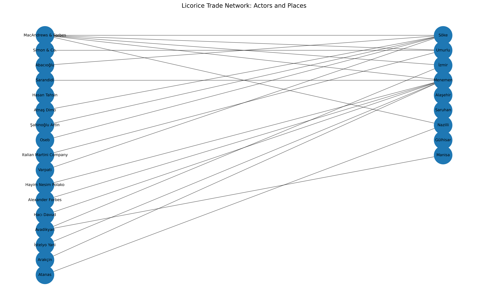

Network Visualization
This page presents an early network visualization of relationships between companies, local actors, and Ottoman authorities involved in the licorice trade.

This artifact highlights how digital methods can help reveal patterns of conflict, connection, and institutional involvement within a historical commodity network.